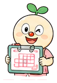

スケジュール
週ごとの訪問とスタッフの予定を組みます。
‹2026/10/05 (月) 〜 10/10 (土)›
コース職員スケジュール
この機能の考え方
- 写すのは患者さんの予定（曜日・開始時刻・長さ）です。時刻は、その週の予定として確定した時刻を使います（QR の実績時刻ではありません）。
- 担当は写しません。写した後に「自動スタッフ割当」でローテーションを効かせて割り当てます（過去 4 週の担当を見て、同じ人が続かないようにします）。
- 固定訪問（マスタ）は一切変えません。固定訪問への反映は、今までどおり別の操作です。
- 写す元の週は選べます。直前の週とは限りません（祝日のあった週を避けるなど）。
写さないもの
- 取消した訪問、予定外の訪問（QR で記録しただけのもの）、特別訪問週間の追加分
- 入院中などで止まっている利用者の訪問（写す先の週の時点で判定）
- 担当、同行、会議・休みなどのイベント（イベントと同行は今までどおり既定から入ります）
- 青ピン（週の固定）、申し送りメモ
安全のための作り
- 実行前に、写す先の週を保存します。「コピー前に戻す」で元に戻せます。
- 写す先に既に訪問がある場合は、打刻済み・カイポケ取込済み・青ピンの訪問を残し、それ以外を置き換えます。件数を確認画面に出します。
- 写した訪問はカイポケにはまだ送られていない状態（●未送信）になります。送るのは今までどおり連携画面からです。